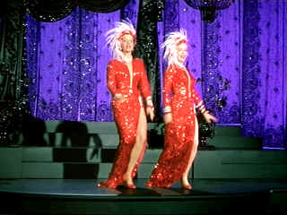

| Gentlemen Prefer Blondes/B+,B+ |
| Fox/1953/97/FS 1.33 |
Gentleman
Prefer Blondes is actually better than I remember it. A couple of showgirls on the make, blonde
Lorelei Lee and her curvaceous brunette buddy Dorothy Shaw entertain the men in between their
glitzy stage act. Lee has playboy heir Gus placing offering of gems at the alter of her
womanhood. They are supposed to make a trip to France to get hitched in the romantic
capital, but Gus is getting cold feet to go along with his hot pants. The girls take the cruise
ship by storm sans Gus and their exploits on board and in Paris keep the action light and
lively.
The production numbers are good fun. Diamonds are a Girl's Best Friend, a
signature song for Monroe, is memorable. Russell cavorts her way through a gaggle of muscle-bound
men in the ship's gym in Ain't There Anyone Here for Love. Then there's the delicious Two
Little Girls From Little Rock belted out by the two tightly clad red-dressed ladies.
 |
| I'll take one from column A and one from column B. ©Fox |
Marilyn makes the most of her facial expressions and is more than delicious poured into her
appurtenances. She does not have to do much to make the most of her body parts. You really get a sense of how much director Howard Hawks loves women. He shoots
Monroe and Russell as if they were a bowl of cherries for his picking. Blondes is paced briskly
with the appropriately glitziest production design over the top fans could ever want. Oh, those
gowns are filled to the brim with these tantalizing women. Young George "Foghorn" Winslow
has a charming scene with Monroe dangling out of a ship's cabin porthole like a ripe tantalizing
melon. Charles Coburn is the randy Sir Francis Beekman, hungry for a taste of youth. Tommy Noonan
and Elliot Reid are eclipsed by the blaze of feminine sexuality as playboy Gus Esmond and Malone,
the detective hired by old man Esmond to get the goods on Lorelei.
The Technicolor production looks great
on DVD. There are a few blemishes, but they are trivial in terms of the overall enjoyment of the
DVD. Mostly sharp, always gorgeously saturated, Blondes doesn’t disappoint. Fox includes
a split screen demo comparison of the restoration work done on Gentlemen Prefer Blondes. The
mono soundtrack is clean with no hint of scratchiness or hum.

Selections from the Feature Archive include articles on
Akira Kurosawa, Frank
Darabont, Blonde Bimbos, Hollywood Street Gangs, or Vietnam: The
Hollywood Pariah, and many more....
Catch the Hollywood take on Blonde Bimbos by clicking on the
image above.

Take a look at the merry images of America's gift to the movies: Hollywood Musical Posters are featured from The Movie Poster Archive.

A heist delivered in simple strokes and sudden fury. Harvey Keitel
is relentless.


DVD
Demystified makes it all clear. The official Internet DVD FAQ for the rec.video.dvd
Usenet newsgroups.

The official site for information about the great comic director. A treat for connoisseurs of
classic Hollywood madcap.

DVD links, information about Web specials, news, Site reviews.